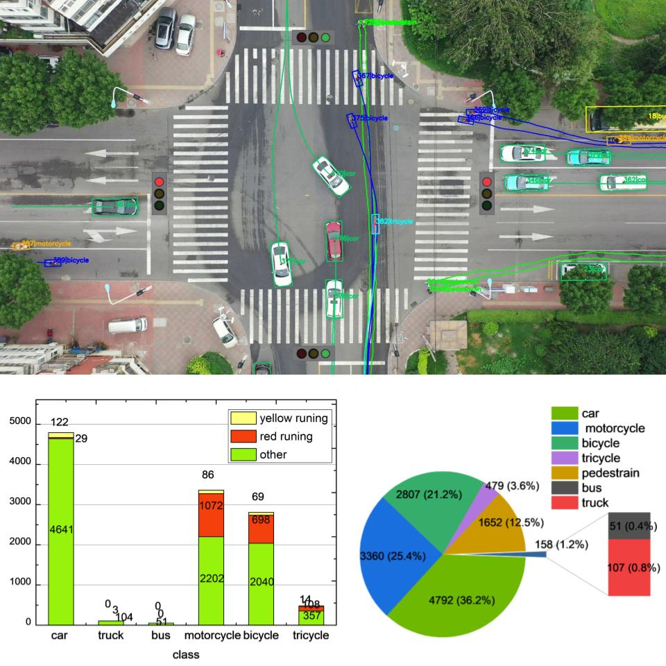
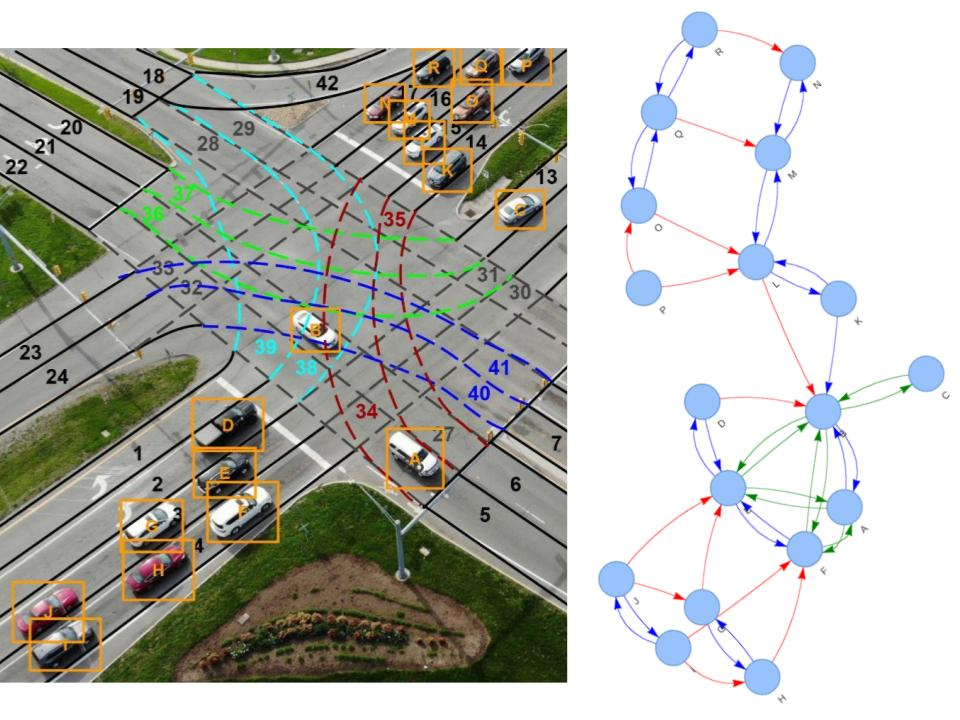
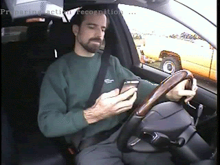
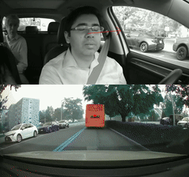
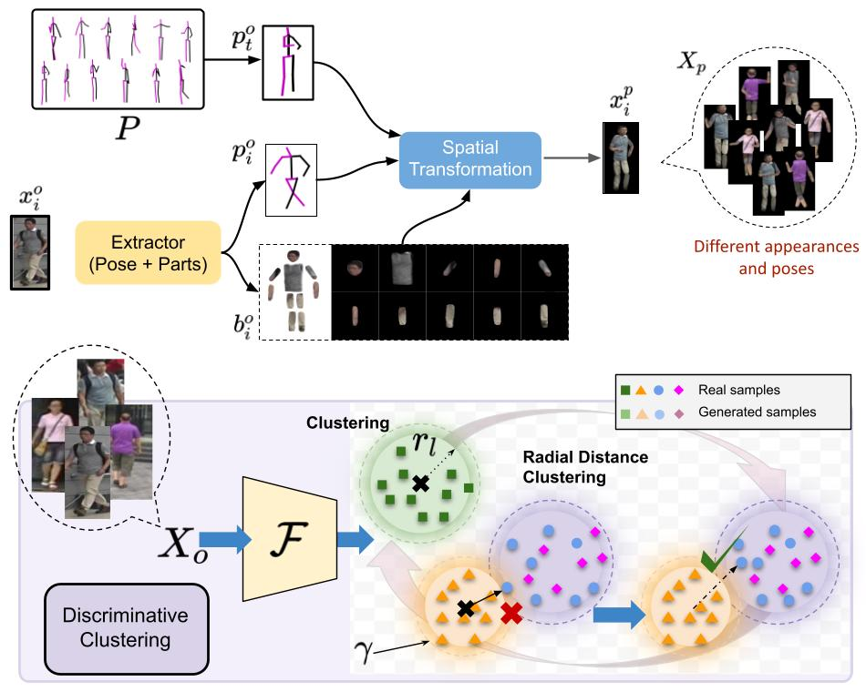
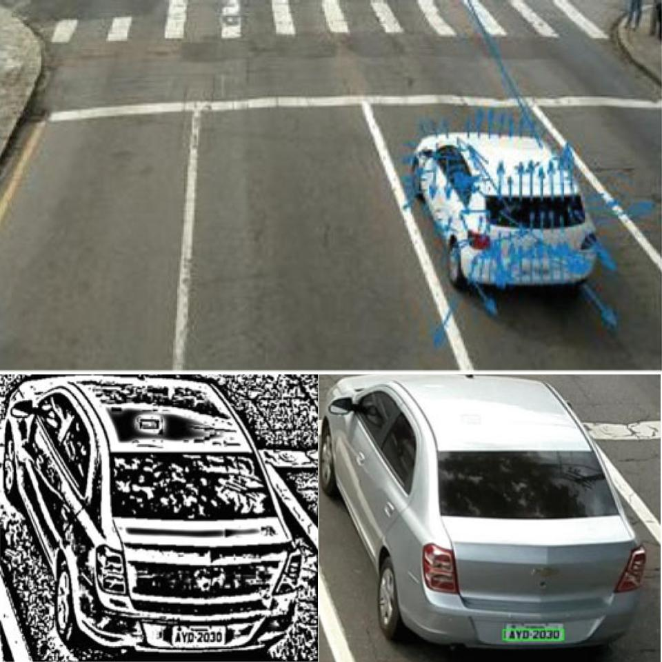

Research
I'm passionate about building intelligent systems that can perceive, understand, and interact with the world.
My interests lie in computer vision, autonomous systems, machine learning, and robotics.
|
|

|
SinD 2.0: A Multi-City UAV Dataset with Semantic Risk Annotations for SOTIF-Oriented Safety Validation at Signalized Intersections
Yunwei Li, Shengjie Fu, Chunrong Chen, Chengxiang Zhao, Yuchen Fan, Mingyu Zhu, Yanchao Xu, Yuxin Zhang, Lan Yang, Chuzhao Li, Jie Ji, Yi He, Abhijit Sarkar,
Akash Sonth,
Hong Wang, Jun Li
arXiv, 2026
dataset
Large-scale drone-based dataset for autonomous driving safety validation at signalized intersections, featuring diverse real-world scenarios, semantic risk annotations, and an end-to-end testing toolchain.
|
|

|
Intersection Safety Modeling Using Semantic Scene Graph and Graph Neural Network
Akash Sonth,
, A Lynn Abbott, Abhijit Sarkar
IEEE IV, 2025 (Oral Presentation)
project page /
code
Semantic scene graphs allows for information-rich and memory-efficient representation of traffic scene and interactions. Graph neural networks further applied to assess safety at signalized intersections.
|
|

|
Explainable Driver Activity Recognition Using Video Transformer in Highly Automated Vehicle
Akash Sonth,
Abhijit Sarkar, Hirva Bhagat, Lynn Abbott
IEEE IV, 2023
project page /
code
Video Swin Transformer pre-trained on large-scale action recognition datasets, fine-tuned for driver secondary activity detection. Visual dictionary introduced to interpret the model's spatial and temporal attention across different activities.
|
|

|
Driver Gaze Fixation and Pattern Analysis in Safety Critical Events
Hirva Bhagat, Sandesh Jain, Lynn Abbott,
Akash Sonth,
Abhijit Sarkar
IEEE IV, 2023
gaze fixation code /
event correlation code
Context-aware driver gaze analysis framework that estimates point of gaze, maps driver attention to surrounding road users, and models gaze fixation patterns using large-scale naturalistic driving data.
|
|

|
Pose-Transformation and Radial Distance Clustering for Unsupervised Person Re-identification
Siddharth Seth,
Akash Sonth,
Anirban Chakraborty
BMVC, 2021
project page /
supplemental /
code
ResNet-50 trained on expertly designed pose-transformed dataset, followed by embedding clustering and a novel radial distance loss to learn compact, well-separated feature representations for unsupervised person re-identification.
|
|

|
Vehicle Speed Determination and License Plate Localization from Monocular Video Streams
Akash Sonth,
Harshavardhan Settibhaktini, Ankush Jahagirdar
CVIP, 2018
Image-processing and optical flow-based traffic surveillance system for vehicle detection, tracking, speed estimation, and license plate localization on low-resolution monocular video.
|
This guy is good at website design.
|
|